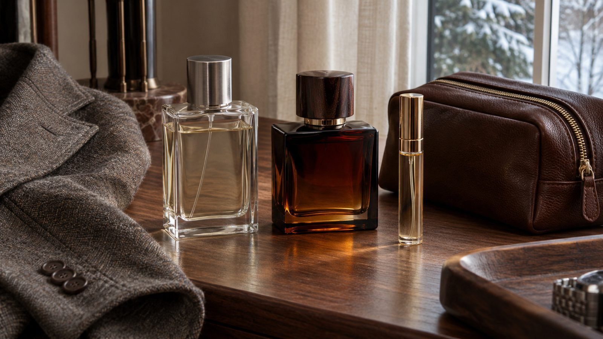

خزانة عطور الشتاء للرجل: ثلاثة عطور تغطي العمل والسهرة والسفر
شتاء الخليج موسم مزدحم: اجتماعات في مكاتب مكيفة، وعشاء في الهواء الطلق، ورحلات قصيرة إلى مدن أبرد. والسؤال العملي هنا ليس كم زجاجة تملك، بل أي عطر يؤدي أي مهمة: واحد لساعات المكتب، وآخر للمساء، وثالث يرافقك في الطائرة والفندق. هذه هي الفكرة التي تجعل أفضل عطور للشتاء للرجال مفيدة فعلًا، لا مجرد قائمة تتغير كل عام.

لماذا تكفي ثلاثة من أفضل عطور للشتاء للرجال؟
القاعدة بسيطة: عطر لا يزعج أحدًا في ساعات العمل، وعطر يترك أثرًا في المساء، وعطر يتحمل تقلبات السفر. حين تحدد هذه الأدوار مسبقًا تتوقف عن الشراء العشوائي، وتصبح المقارنة بين ترشيحات افضل عطور للشتاء للرجال أسهل، لأنك تبحث عن مرشح لدور محدد لا عن عطر يفعل كل شيء.
وفي الطقس الأبرد يتبخر العطر ببطء أكبر وقد يقل انتشاره، فيظن بعض الرجال أنهم يحتاجون إلى رشات أكثر. الأفضل أن تختار تركيبة أغنى للدور المناسب بدل مضاعفة الرشات من عطر خفيف. ولا يخلو الأمر من رأي آخر، إذ يرى Dan Terry، المدير الإبداعي لـOo La Lab، في حديثه إلى Gulf News أنك قد تحتاج على الأرجح إلى كمية أكبر من العطر في الطقس البارد. لكن الزيادة المحسوبة في جلسة خارجية شيء، ومضاعفة رشات عطر خفيف في مكتب مغلق شيء آخر.
عطر العمل: دفء هادئ لا يملأ القاعة
في المكتب يعمل العطر في مساحة مغلقة ولساعات طويلة، فالمطلوب حضور قريب من الجلد. ابحث عن قاعدة من خشب الأرز أو الصندل، مع لمسة توابل خفيفة مثل الهيل أو الفلفل الوردي، أو ورق الشاي والسوسن لمن يحب الطابع النظيف. هذه المكونات تمنح دفئًا شتويًا دون أن تتحول إلى رائحة ثقيلة يشمها الجالس في آخر الطاولة.
مثال افتراضي: موظف في دبي يبدأ يومه باجتماع صباحي ثم يقضي الظهر في مكتبه. رشتان من عطر خشبي هادئ على الرقبة والصدر تكفيانه، ولا يحتاج إلى إعادة الرش قبل المساء إذا كانت القاعدة جيدة. وإذا كان لديه عرض أمام الإدارة بعد الظهر، فلا يجدد العطر قبله، لأن قاعة مغلقة ممتلئة بالحضور لا تحتمل رشة إضافية.
ولكي تعرف أن عطر العمل في حدوده الصحيحة، استخدم مقياس المسافة: يُفترض أن يلاحظه من يصافحك أو يجلس بجوارك في الاجتماع، لا من يقف عند باب الغرفة. وإذا علّق أكثر من زميل على رائحتك قبل أن يقترب منك، فخفّف رشة واحدة في اليوم التالي بدل أن تغيّر العطر كله.
عطر السهرة: مكان العود والعنبر
المساء هو الوقت الذي يحتمل فيه الشتاء أغنى المكونات: العود، والعنبر، والجلد، وحبوب التونكا، والفانيليا. وهنا تحديدًا تتألق عطور عربية رجالية أصيلة، لأن طبيعة هذه المكونات تناسب ليلة باردة في مجلس أو عشاء خارجي أكثر من أي وقت آخر في السنة.
وللسهرة الشتوية مساران يحسن أن تميّز بينهما. الأول حلو دافئ تقوده التونكا والفانيليا، ويناسب جلسة خارجية أو أمسية هادئة. والثاني جاف دخاني يقوده العود والجلد، وهو أنسب لعشاء في مطعم تختلط فيه روائح الطعام، لأن الحلاوة الثقيلة قد تتزاحم معها. معرفة المسار الذي تميل إليه تختصر عليك نصف التجارب في المتجر.
ومن يفضل التركيبات الغربية الداكنة سيجد في قائمة عطور توم فورد الرجالية أمثلة على عطور مسائية تعتمد على الجلد والتوابل والأخشاب الثقيلة. المهم أن تتذكر أن الكثافة تعني رشات أقل، فعطر السهرة القوي يعمل بثقة أكبر حين يُستخدم باعتدال.
عطر السفر: مرن وسهل الحمل
عطر السفر يجب أن يتكيف مع أماكن مختلفة: طائرة مزدحمة، وفندق دافئ، وشارع بارد في مدينة أوروبية. لذلك يناسبه طابع وسط مثل الخشبي العطري أو المسك النظيف مع لمسة حمضيات، لأنه لا يبدو خفيفًا أكثر من اللازم في البرد ولا ثقيلًا في مقصورة مغلقة.
وإن كانت الميزانية لا تسمح بثلاث زجاجات، فلا بأس أن يؤدي عطر العمل دور عطر السفر بعد نقله إلى عبوة صغيرة، ما دام طابعه وسطًا لا يثقل في المقصورة. توزيع الأدوار وسيلة تنظيم لا شرط، والمهم أن يغطي ما تملكه مهام يومك الفعلية.
وللعطر في حقيبة اليد قواعد عملية. تذكر صفحة الأمن في مطارات دبي أن عبوة السوائل في حقيبة اليد يجب ألا تتجاوز 100 مل، وأن الحد الأقصى عشر عبوات بما يعادل لترًا، داخل كيس بلاستيكي شفاف قابل للإغلاق. لذلك يفيدك أن تنقل عطر السفر إلى عبوة صغيرة قابلة لإعادة التعبئة، وأن تتحقق من قواعد مطار المغادرة وشركة الطيران قبل كل رحلة لأنها قد تختلف. واحفظ الزجاجة الأصلية بعيدًا عن الضوء والحرارة، فترك العطر في سيارة متوقفة تحت شمس الظهيرة ليس فكرة جيدة حتى في الشتاء.
ومن الحكمة أن تملأ عبوة السفر قبل الرحلة بأيام لا في ليلتها، لتتأكد من أن غطاءها محكم ولا يرشح داخل الحقيبة، وأن تكتب اسم العطر عليها إن كنت تحمل أكثر من عبوة متشابهة. ثم ضعها داخل الكيس الشفاف مع بقية السوائل كما تطلب صفحة الأمن، فذلك يختصر عليك إعادة ترتيب الحقيبة عند التفتيش.
مثال افتراضي: رحلة عمل من دبي إلى لندن في ديسمبر تمتد ثلاثة أيام. قبل الصعود إلى الطائرة تكفي رشة واحدة من عطر السفر على الصدر، لأن المقصورة مغلقة والجيران قريبون. وفي اجتماعات النهار يعتمد على عطر العمل المنقول في عبوة صغيرة، وفي عشاء العمل الأخير يضع رشتين من عطر السهرة الذي حمله في عبوة ثانية. ثلاث عبوات صغيرة داخل الكيس الشفاف تغطي الرحلة كلها دون حمل الزجاجات الأصلية.
اختبر خزانتك قبل أن تكتمل
لا تشترِ العطور الثلاثة في يوم واحد. ابدأ بعطر العمل لأنه الأكثر استعمالًا، وجربه أسبوعًا كاملًا، ثم أضف عطر السهرة بحيث يختلف عنه بوضوح، واجعل عطر السفر نقطة وسط بينهما. وإذا وجدت أن عطرين يؤديان الدور نفسه، فاستبدل أحدهما. ومن يتابع جديد العطور في مجلة رجال يستطيع أن يقارن الإصدارات الموسمية بخزانته بدل أن يبدأ من الصفر كل شتاء.
وقبل أن تكتمل الخزانة، انتبه إلى أخطاء تربكها. أكثر ما يفسد الخطة أن تشتري العطور الثلاثة من العائلة نفسها، كأن تكون كلها عنبرية حلوة، فتتداخل أدوارها ولا تعرف أيها تختار صباحًا. ومنها أيضًا أن تستعير عطر السهرة لاجتماع صباحي لأنه الأحب إليك، أو أن تحكم على عطر شتوي في زيارة سريعة للمتجر دون أن ترتديه يومًا كاملًا. وينصح Dan Terry في حديثه نفسه بالتعمق في المكونات التي تحبها وتتبعها، وهي طريقة عملية لتختار لكل دور عطرًا مختلفًا عن أخويه.
وفي نهاية الموسم راجع ما استعملته فعلًا: الزجاجة التي بقيت ممتلئة تقريبًا تخبرك بأن دورها لم يكن واضحًا، أو أن عطرًا آخر في الخزانة أخذ مكانها. هذه الملاحظة الصغيرة توجّه مشترياتك في الشتاء التالي أفضل من أي ترشيح عام، لأنها مبنية على عاداتك أنت لا على ذوق غيرك.
بهذه الطريقة يصبح العطر جزءًا منظمًا من لايف ستايل الرجل العصري: ثلاث زجاجات تعرف متى تستعمل كل واحدة منها، وتعرف لماذا اخترتها، وتعرف أيضًا ما الذي ينقصها حين يحين وقت الإضافة التالية.